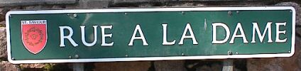
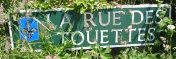

Most road names in Jersey are either in French or in a gallicised Jèrriais. Many street names in urban areas are in English, reflecting the predominance of the English language in urban areas at the time the streets were being laid out. Often, an older French or Jèrriais name is preserved - and shown on the name signs.
The most recent road names tend to be in French or Jèrriais, reflecting a greater historical and cultural consciousness among the public.
En Jèrri les c'mîns ont l'pus souvent des noms en Français ou en Jèrriais, mais lé Jèrriais qu'les anciens faîsaient sèrvi 'tait pustôt "francisé". Les positions des noms et d's adjectifs dans cèrtains noms dé c'mîn nos mouontrent qué ch'est du Jèrriais: par exempl'ye, lé Rouge Bouoillon, la Verte Rue, la Rouge Rue, la Rue de la Blanche Pierre...
Nou vait des mots Jèrriais dans les noms des c'mîns, coumme "la cache", "la sente" et "les mielles".
En Ville, des noms en Angliais avaient souvent rempliaichi les vièrs noms en Français ou en Jèrriais, mais l's enseingnes présèrvent les vièrs noms. Ou pouvez les vaie dans les portraits sus chutte page.
Mais ach'teu les noms les pus récents des rues en Ville portent des noms en Français ou en Jèrriais: La Cache des Mélèches, L'Avenue et Dolmen du Pré des Lumières, La Route du Port Elizabeth....
|
Preunmiéthement |
Autrément |
|
Ann Street |
Rue des Helles |
|
Aquila Road |
Les Pres |
|
Bath Street (Lower) |
La Rue de Bas |
|
Bath Street (Upper) |
Les Ruettes |
|
Bond Street |
Chemin des Madelaine, Rue de la Madelaine |
|
Broad Street |
La Grande Rue, La Grand'Rue, Rue Egypte |
|
Brook Street |
Rue du Petit Douet, Le Petit Douet |
|
Byron Lane |
Rue de Biron |
|
Byron Road |
La Ruette Biron |
|
Castle Street |
Le Perquage, Le Percage, La Rue du Château |
|
Charing Cross |
La Rue de la Prison, La Pompe du Bas |
|
Cheapside |
Mielles du Bas |
|
Chevalier Road |
La Rue Chevalier |
|
Church Street |
La Rue Trousse Cotillon, La Rue du Trousse Cotillon, La rue du Cimetière |
|
Clairvale Road |
Clairval |
|
Claremont Road |
Le Mont Millais |
|
College Hill |
Le Pied des Creux |
|
Colomberie |
La Colomberie, La Rue de la Colombe |
|
Colomberie (part of) |
Le Pied des Creux |
|
Commercial Buildings |
Le Quai des Marchards |
|
Common Lane |
Le Chemin de la Commune, La Ruette de la Commune |
|
Conway St & Wharf St. |
La Banque |
|
King Street |
La Ruette ès Haguais |

|
David Place |
La Rue ès Dentistes |
|
d'Auvergne Lane |
La Rue d'Auvergne |
|
Dicq Road |
La Rue du Dicq |
|
Don Road |
La Verte Rue, La Rue des Alleurs |
|
Duhamel Place |
La Rue du Hamel |
|
Dumaresq St. & Geyt St. |
Les Hemies [sic] |
|
Esplanade |
L'Esplanade |
|
First Tower |
Ville ès Nouaux |
|
Fort Regent |
Le Mont de la Ville |
|
Gas Place |
La Blanche Dame |
|
Green Road |
Le Dicq |
|
Green Street |
La Rue du Puits, La Verte Rue |
|
Halkett Place |
La Rue du Marché, La Ruette Morier |
|
Halkett Place (Upper) |
La Croix Morier |
|
Harbour (French) |
Coin aux Rats |
|
Harbour (Old) |
Quai Folie |
|
Hilary Street |
La Rue de Carteret |
|
Hilgrove Street |
Les Ruettes or La Rue ès Français |
|
Hill Street |
La Rue des Trais Pigeons, La Rue de Haut, La Rue des Forges, La Rue du Pied de la Montagne, Les Calvin |
|
Hue Street |
Rue de Hue |
|
Ingouville Place |
La Rue Ingouville |
|
Janvrin Road |
La Rue Janvrin |
|
Journeax Street |
La Rue Journeaux |
|
King Street |
Rue de Derrière |
|
La Chasse |
Rue de Madagascar |
|
La Collette (Chapel) |
Notre Dame Des Pas |
|
La Folie (Harbour) |
La Rocque Creuse |
|
La Motte Street (part of) |
Hemery Row |
|
La Motte Street |
Rue de la Motte |
|
La Pouquelaye |
Le Mont de la Pouquelaye |
|
Le Breton Lane |
La Rue Le Breton |
|
Lemprière Street |
La Ruettes des Prés |
|
Library Place |
Le Coin ès Cochons |
|
Marett Road |
Les Marettes |
|
Minden Place |
La Rue de la Foire à Betail |
|
Mont Cochon |
Lé Mont Couochon |
|
Mont Millais (Don Rd. to Douro Terr) |
Rouge Rue |
|
Museum Street |
La Rue du Musée |
|
New Cut |
Le Coin-ès-ânes, Bel au Vieux Chemin |
|
New St. John's Road |
Le Mont Martin |
|
New Street |
Rue Durell, Chemin Neuf |
|
Old St. John's Road |
Le Mont Madgris |
|
Old Street |
Vieux Chemin |
|
Oxford Road |
La Rue Messervy |
|
Parade |
Les Mielles |
|
Payn Street |
La Rue Payn |
|
People's Park |
Milles [sic] du Haut |
|
Pier Road |
Le Chemin du Chaussée |
|
Plat Douet Road |
Le Chemin du Plat Douet |
|
Post Office |
Le Percage |
|
Queen Street |
Rue Milieu, Rue ès Porcs, La Rue du Milieu |
|
Queen Street |
Rue de Haut |
|
Queen's Road |
Le Mont à l'Abbé |
|
Rat's Corner (Old Harbour) |
Le Coin ès Rats |
|
Regent Road |
Rue du Froid Vent |
|
Regent Road (Old Theatre Place) |
La Vielle Comédie |
|
Regent Road Steps |
La Ruette de la Comédie, La Ruette Pourriture |
|
Roseville Street |
Long Bouet |

|
Rouge Bouillon |
Lé Rouoge Bouoillon |
|
Roussel Street |
La Rue Roussel |
|
|
La Route de la Libération |
|
St. Aubin's Road, Inner Road |
La Route de Saint Aubin |
|
Royal Court |
La Cohue |
|
Royal Square |
La Place du Marché |
|
Royal Square |
Le Vièr Marchi |
|
Royal Square (statue) |
La Pyramide |
|
Sand Street |
Rue ès Sablons |
|
Seale Street |
La Rue Seale |
|
Seaton Place |
La Seatonnerie |
|
Snow Hill |
Le Carrefour de la Pompe de Haut, Pompe de Haut |
|
South Hill |
Le Petit Mont de la Ville |
|
St Clement's Road |
Rue ès Ronces |
|
St. Saviour's Road |
Le Coie, Le Coues |
|
Tunnel Street |
La Rue du Douet |
|
Union Street |
Les Hemmies |
|
Val Plaisant |
La Rue du Val |
|
|
Vallée des Vaux |
|
Vauxhall |
La Rue à Blanches Dames, Rue à la Blanche Dame |
|
Vauxhall (North end) |
Rue de Val |
|
Vine Street |
Rue des Vignes |
|
Wellington Road |
La Rue à l'Eau |
|
Westmount |
Le Mont ès Pendus |
|
Westmount Road (low end) |
La Rue Cholera, Cholera Row |
|
York Street |
La Planque Billot, La Rue de la Planque Billot |






Viyiz étout: